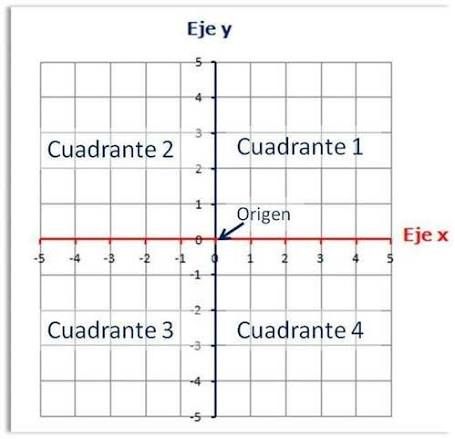
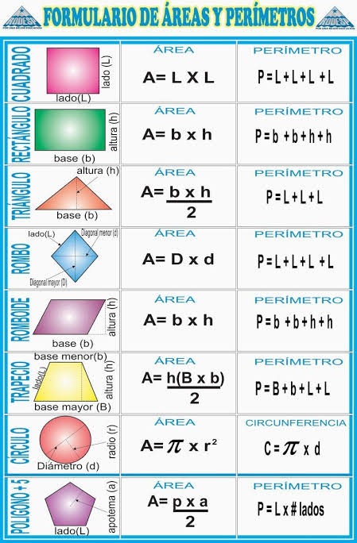
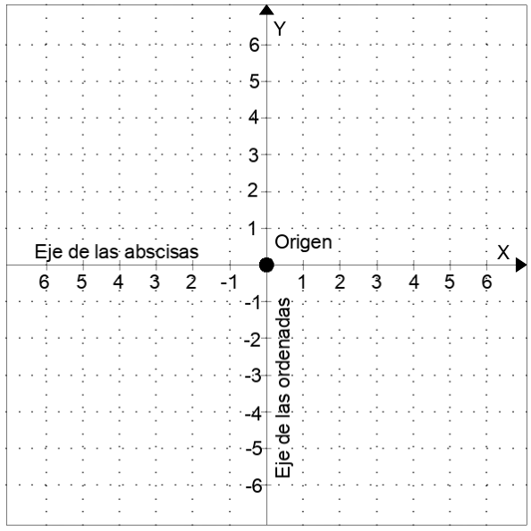
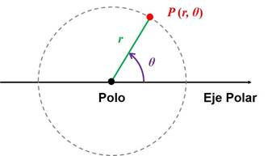
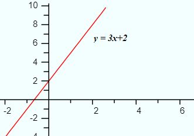
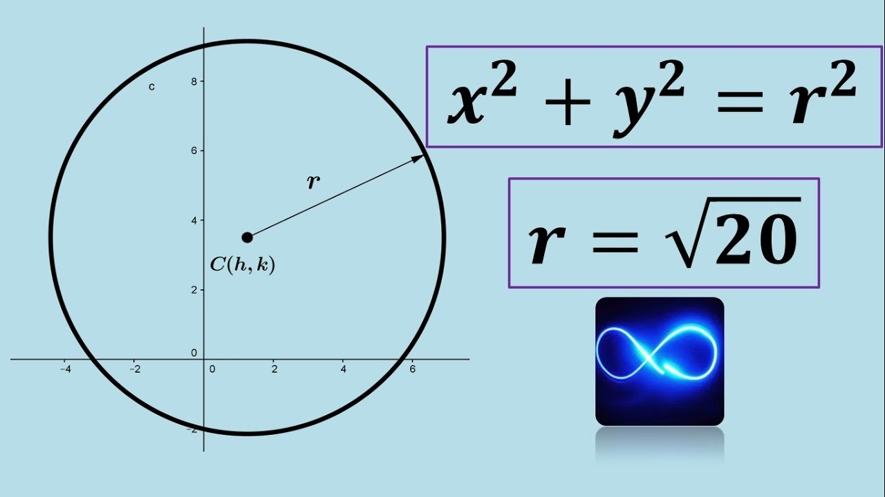
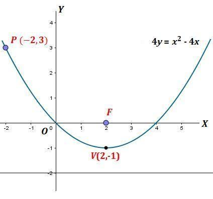
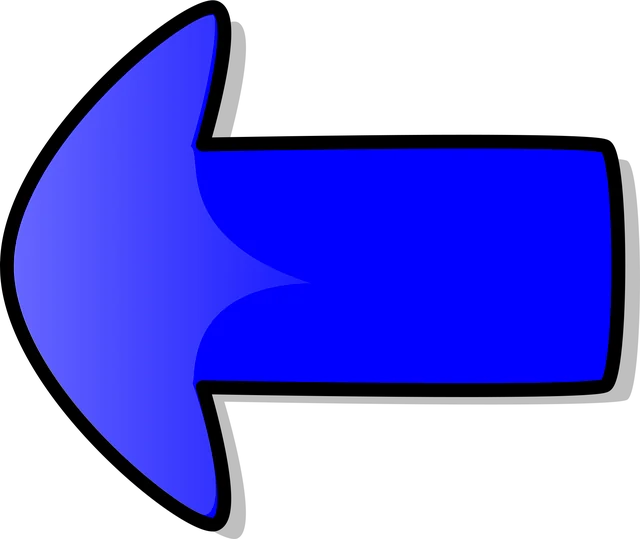

Las Matemáticas
Geometria analítica

Inicio
Introducción:
rama de las matemáticas que estudia las figuras geométricas, sus propiedades (como áreas, distancias, ángulos y volúmenes)
y los lugares geométricos mediante el uso de expresiones algebraicas y un sistema de coordenadas.
Características Principales:
1.- Sistema de coordenadas: Utiliza principalmente el plano cartesiano, el cual se divide en dos ejes perpendiculares (x),(y) y cuatro cuadrantes.
2.- Relación álgebra-geometría: Convierte los problemas geométricos en ecuaciones y, a la inversa, representa las ecuaciones algebraicas como gráficas o figuras geométricas.
3.- Origen histórico: Fue desarrollada en el siglo XVII por los matemáticos franceses René Descartes y Pierre de Fermat.


Plano Cartesiano
Un plano cartesiano es un sistema de referencias formado por dos rectas numéricas perpendiculares que se cruzan en un punto llamado origen

Plano Polar
Un plano polar es un sistema de referencia formado por dos rectas numéricas perpendicualres que se cruzan en un punto llamado origen

Formulas y Ecuaciones
Para Calcular figuras, rectas, parábolas, etc...



| Recta | Circunferencia | Parábola | |
|---|---|---|---|
| Formula | y = mx + b |
x^2 + y^2 = r^2 |
y^2 = 4px , x^2 = 4py |
| Regla | Ningun valor esta elevado al cuadrado |
A y C deben ser iguales tanto con signo como de valor |
Solo una variable debe estar elevada al cuadrado |
¿Qué tanto sabes del tema? Compruebalo aquí
.png)

escucha algo de música para concentrarte!!!